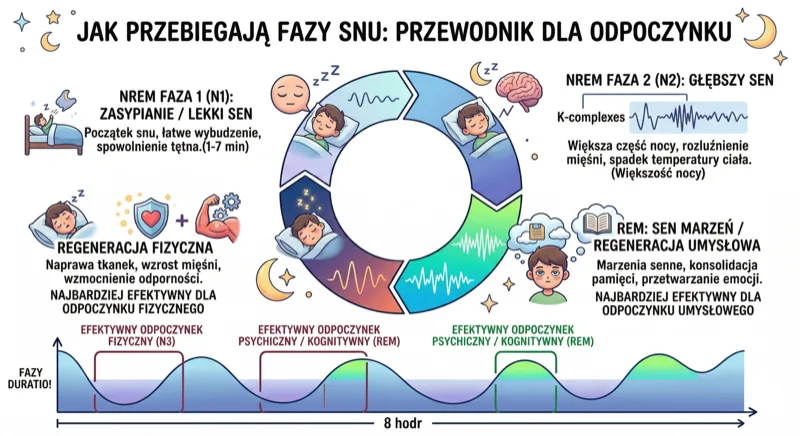
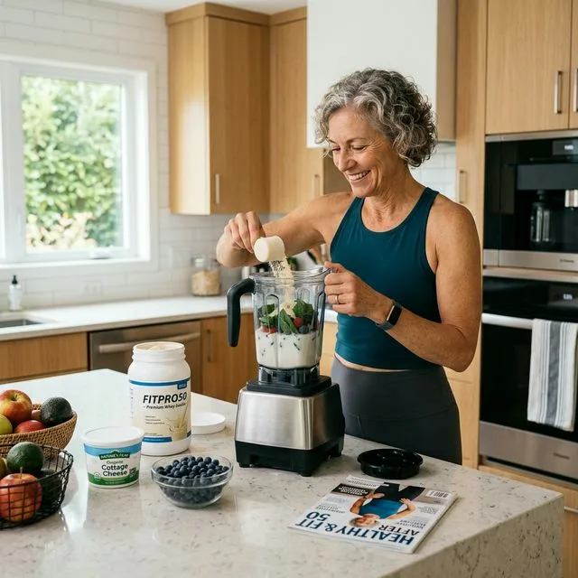

Sen i regeneracja po 50-tce to jeden z najważniejszych filarów zdrowia, sprawności i skutecznego treningu. Możesz regularnie ćwiczyć, dobrze się odżywiać i dbać o suplementację, a mimo to nie widzieć efektów, jeśli organizm nie dostaje odpowiedniej ilości snu. To właśnie nocą ciało naprawia mikrouszkodzenia mięśni, reguluje hormony i przygotowuje się do kolejnego wysiłku. Po 50. roku życia znaczenie snu rośnie jeszcze bardziej, bo naturalna regeneracja organizmu przebiega wolniej niż wcześniej.
Szybka odpowiedź
Po 50-tce celuj w 7-8 godzin snu na dobę, bo krótszy sen podnosi ryzyko insulinooporności, gorszej regeneracji i nadciśnienia. Jeśli budzisz się regularnie po 3-4 godzinach, zacznij od stałej godziny zasypiania i ogranicz kofeinę po 14:00. Poprawa snu często zwiększa efekty treningu już w 2-4 tygodnie.
Kluczowe wnioski
Kluczowe wnioski
- Najważniejsze: Sen i regeneracja po 50-tce to jeden z najważniejszych filarów zdrowia, sprawności i skutecznego treningu.
- W artykule znajdziesz konkrety o: Dlaczego sen po 50-tce jest tak ważny.
- Drugi kluczowy temat: Co dzieje się w organizmie podczas snu.

Dlaczego sen po 50-tce jest tak ważny?
Sen nie jest przerwą od treningu. Sen jest jego niezbędnym uzupełnieniem. W czasie odpoczynku organizm odbudowuje tkanki, stabilizuje układ nerwowy i przywraca równowagę hormonalną. Jeśli śpisz za krótko albo budzisz się wielokrotnie w nocy, ciało nie ma warunków do pełnej regeneracji.
Dla osób po 50-tce ma to szczególne znaczenie. Wraz z wiekiem spada produkcja hormonu wzrostu, obniża się zdolność do szybkiej odbudowy mięśni i rośnie ryzyko sarkopenii, czyli utraty masy mięśniowej. Dlatego dobry sen po 50-tce wpływa nie tylko na samopoczucie, ale także na siłę, sylwetkę, metabolizm i codzienną sprawność.
Co dzieje się w organizmie podczas snu?
Można to porównać do remontu domu. Trening jest bodźcem, który uruchamia zmiany. Sen to moment, w którym organizm wykonuje właściwą pracę naprawczą. Bez snu nie ma pełnej odbudowy, a wysiłek fizyczny daje słabsze efekty.
Głęboki sen i regeneracja mięśni
Podczas głębokiego snu, szczególnie w fazie N3, organizm intensywnie wydziela hormon wzrostu. To właśnie wtedy dochodzi do naprawy mikrouszkodzeń mięśniowych powstałych podczas treningu. Mięśnie nie rosną w trakcie ćwiczeń, lecz po nich, kiedy ciało ma czas na regenerację. Najlepsze warunki do tego daje jakościowy, nieprzerwany sen.
Badania wskazują, że około 75% dobowej produkcji hormonu wzrostu przypada na fazę głębokiego snu. Gdy tej fazy jest za mało, proces regeneracji mięśni wyraźnie zwalnia, a organizm trudniej radzi sobie z powysiłkowym stanem zapalnym.
Sen a kortyzol, testosteron i IGF-1
Dobry sen pomaga obniżyć poziom kortyzolu, czyli hormonu stresu. Jednocześnie wspiera korzystne środowisko anaboliczne, w którym łatwiej utrzymać prawidłowy poziom testosteronu i IGF-1. To z kolei przekłada się na lepszą regenerację, mniejszą bolesność mięśni i skuteczniejszą odbudowę po wysiłku.
Kiedy śpisz źle, sytuacja się odwraca. Kortyzol rośnie, organizm dłużej pozostaje w trybie stresu, a procesy naprawcze są osłabione.
Efekt to zmęczenie, gorsze wyniki treningowe i wolniejszy powrót do formy.
Dlaczego po 50-tce brak snu szkodzi bardziej?
Po 50. roku życia organizm jest mniej odporny na skutki przewlekłego niewyspania. To wynika z kilku nakładających się procesów biologicznych. Po 50-tce warto wdrażać te zasady spokojnie i regularnie, obserwując reakcję organizmu oraz łącząc je z codziennym ruchem i regeneracją.
Mniej hormonu wzrostu wraz z wiekiem
Naturalna produkcja hormonu wzrostu spada z wiekiem. Oznacza to, że każda dobrze przespana noc jest dla osoby dojrzałej szczególnie cenna. Jeśli jakość snu jest słaba, organizm traci ważną część możliwości regeneracyjnych, których i tak ma mniej niż w młodości.
Sarkopenia i utrata masy mięśniowej
Brak snu może nasilać procesy typowe dla sarkopenii. Niedobór regeneracji zwiększa rozpad białek mięśniowych i utrudnia syntezę nowych. W praktyce oznacza to większą trudność w budowaniu lub utrzymaniu mięśni, nawet przy regularnym treningu siłowym i odpowiedniej diecie.
To ważny sygnał dla osób, które chcą zachować sprawność po 50-tce. Trening, białko i kreatyna działają najlepiej wtedy, gdy organizm ma warunki do nocnej odbudowy.
Kortyzol po 50-tce - cichy sabotażysta regeneracji?
Kortyzol pełni potrzebną funkcję, bo pomaga reagować na stres i mobilizować energię. Problem pojawia się wtedy, gdy jego poziom pozostaje podwyższony zbyt długo. Wtedy zaczyna utrudniać regenerację, nasila odkładanie tkanki tłuszczowej w okolicy brzucha, podnosi ciśnienie i pogarsza odpowiedź organizmu na trening.
U osób po 50-tce spoczynkowy poziom kortyzolu bywa naturalnie wyższy niż u młodszych dorosłych. Jeśli dołożymy do tego chroniczny niedobór snu, organizm dostaje dodatkowy sygnał stresowy. W praktyce oznacza to dłuższe zmęczenie, twardsze i bardziej obolałe mięśnie oraz wolniejsze efekty ćwiczeń.
Regularny, dobrej jakości sen to jeden z najmocniejszych naturalnych sposobów na obniżenie kortyzolu i poprawę regeneracji po treningu.
Ile snu potrzebujesz po 50-tce?
Zalecenia dla dorosłych pozostają jasne: większość osób potrzebuje od 7 do 9 godzin snu na dobę. Jeśli regularnie trenujesz, szczególnie siłowo lub intensywnie, u części osób lepiej sprawdza się górna część tego zakresu. To właśnie w tym miejscu najłatwiej zobaczyć różnicę między modą a radami, które mają sens.
Nie liczy się jednak tylko czas spędzony w łóżku. Bardzo ważna jest jakość snu. Siedem godzin nieprzerwanego snu zwykle daje lepszą regenerację niż dziewięć godzin z częstymi wybudzeniami. To dlatego, że fazy snu głębokiego i REM muszą przebiegać w odpowiednim rytmie, aby organizm mógł w pełni skorzystać z nocnej odbudowy.
Najczęstsze mity o śnie po 50-tce?
Najczęstsze mity o śnie po 50-tce. Ta sekcja porządkuje temat "Najczęstsze mity o śnie po 50-tce?" w prosty sposób: najpierw najważniejsze zasady, potem bezpieczne wdrożenie i na końcu sygnały, które warto monitorować. Taki układ pomaga działać spokojnie, utrzymać regularność i szybciej odróżnić dobre wskazówki od przypadkowych porad z internetu.
Mit 1. Starszym osobom potrzeba mniej snu
To nieprawda. Zapotrzebowanie na sen u dorosłych nie spada wyraźnie po 50-tce. Zmienia się przede wszystkim jakość snu. Częstsze przebudzenia i płytszy sen sprawiają, że trudniej osiągnięcie pełną regenerację, ale potrzeba snu nadal pozostaje wysoka.
Mit 2. Można przyzwyczaić się do niedoboru snu
Subiektywne przyzwyczajenie nie oznacza, że organizm funkcjonuje prawidłowo. Wiele osób po długim czasie niewyspania przestaje wyraźnie odczuwać senność, ale ich regeneracja, koncentracja, siła i tempo odbudowy mięśni nadal są osłabione.
Mit 3. Drzemka zastępuje nocny sen
Krótka drzemka może pomóc obniżyć napięcie i poprawić czujność, ale nie zastąpi pełnowartościowego snu nocnego. Najważniejsze procesy związane z regeneracją mięśni i równowagą hormonalną zachodzą podczas dłuższego, ciągłego snu.
Mit 4. Intensywny trening zmniejsza potrzebę snu
Jest odwrotnie. Im ciężej trenujesz, tym więcej regeneracji potrzebujesz. Krótki sen po intensywnym tygodniu treningowym ogranicza korzyści z wysiłku i zwiększa ryzyko przeciążenia.
Mit 5. Alkohol pomaga się zregenerować
Alkohol może ułatwić zasypianie, ale pogarsza jakość snu. Zaburza fazę REM i głęboki sen, czyli te etapy, które są najważniejsze dla odbudowy organizmu. Możesz mieć wrażenie, że spałeś, ale ciało nie zregenerowało się tak, jak powinno.
Jak poprawić sen i regenerację po 50-tce?
Poniżej znajdziesz praktyczne wskazówki, które pomagają poprawić jakość snu, obniżyć poziom stresu i wesprzeć regenerację mięśni po treningu. Po 50-tce warto wdrażać te zasady spokojnie i regularnie, obserwując reakcję organizmu oraz łącząc je z codziennym ruchem i regeneracją.
1. Ustal stałą godzinę wstawania
Regularna pora pobudki pomaga ustabilizować rytm dobowy. Dla organizmu to często ważniejsze niż sama godzina zasypiania. Kiedy wstajesz codziennie o podobnej porze, łatwiej zasypiasz i śpisz głębiej.
2. Zadbaj o chłód w sypialni
Zbyt wysoka temperatura pogarsza jakość snu. Dla większości osób najlepiej sprawdza się sypialnia o temperaturze około 17-19°C. Chłodniejsze warunki ułatwiają wejście w głębsze fazy snu.
3. Ogranicz ekrany przed snem
Światło emitowane przez telefon, tablet i telewizor może zaburzać wydzielanie melatoniny. Warto odłożyć ekran na co najmniej godzinę przed snem, aby dać organizmowi czytelny sygnał, że zbliża się czas odpoczynku.
4. Nie trenuj zbyt późno
Intensywny trening tuż przed snem podnosi temperaturę ciała, tętno i poziom pobudzenia. Lepiej zakończyć mocniejszy wysiłek przynajmniej 3 godziny przed snem, aby organizm zdążył się wyciszyć.

5. Sprawdź poziom magnezu i witaminy D
Niedobory tych składników mogą pogarszać jakość snu. Magnez wspiera wyciszenie układu nerwowego, a witamina D pomaga regulować rytm dobowy. Jeśli masz wątpliwości, warto wrócić do badań krwi i ocenić wyniki z lekarzem lub dietetykiem.
6. Rozważ białko przed snem
Wieczorna porcja białka, na przykład twarogu lub kazeiny, może wspierać nocną syntezę białek mięśniowych. To proste rozwiązanie szczególnie przydatne dla osób aktywnych, które chcą poprawić regenerację po treningu siłowym.
7. Ogranicz kofeinę po południu
Kofeina działa przez wiele godzin. Nawet jeśli po kawie zasypiasz bez problemu, jej obecność w organizmie może pogarszać jakość głębokiego snu. Dla wielu osób dobrym rozwiązaniem jest rezygnacja z kofeiny po godzinie 14:00.
8. Wybieraj aktywny odpoczynek
Dzień regeneracyjny nie musi oznaczać bezruchu. Lekki spacer, spokojny rower, rozciąganie lub łagodny basen pomagają poprawić krążenie i zmniejszyć sztywność mięśni po treningu.
Sen a trening po 50-tce - najważniejsze wnioski?
Jeśli zależy Ci na tym, aby trening po 50-tce naprawdę działał, potraktuj sen tak samo poważnie jak plan ćwiczeń i dietę. To właśnie sen decyduje, czy mięśnie się odbudują, hormony wrócą do równowagi, a organizm będzie gotowy na kolejny bodziec.
Po 50-tce dobrej jakości sen pomaga utrzymać masę mięśniową, ograniczać skutki stresu, wspierać metabolizm i poprawiać codzienną sprawność. Zbyt krótki lub słaby sen może sabotować nawet najlepiej ułożony trening.
Podsumowanie?
Sen i regeneracja po 50-tce mają bezpośredni wpływ na zdrowie, siłę, sylwetkę i tempo powrotu do formy po wysiłku. Jeśli ćwiczysz, dbasz o dietę i chcesz zachować sprawność na dłużej, zadbaj także o jakość nocnego odpoczynku. To jedna z najprostszych, a jednocześnie najskuteczniejszych rzeczy, jakie możesz zrobić dla swojego organizmu.
Jeśli chcesz przełożyć tę regenerację na plan działania, zobacz też 30-dniowy plan pierwszych treningów po 50-tce oraz praktyczne zasady z tekstu o nawodnieniu podczas treningu.
Dobrym uzupełnieniem są także materiały o kreatynie po 50-tce, o tym jak trening silowy wspiera regeneracje DNA i spowalnia starzenie komorkowe oraz o tym, jak ograniczyć skutki długiego siedzenia, żeby nie psuć efektów nocnej regeneracji.
Źródła
Źródła
- [1] Born, J., Muth, S., Fehm, H.L. (1988). The significance of sleep onset and slow wave sleep for nocturnal release of growth hormone (GH) and cortisol. Psychoneuroendocrinology, 13(3), 233-243.
- [2] Dattilo, M. et al. (2011). Sleep and muscle recovery: endocrinological and molecular basis for a new and promising hypothesis. Medical Hypotheses, 77(2), 220-222.
- [3] Dattilo, M. et al. (2012). Paradoxical sleep deprivation induces muscle atrophy. Muscle & Nerve, 45(3), 431-433.
- [4] Journal of Clinical Medicine (2025). Sleep and Athletic Performance: A Multidimensional Review of Physiological and Molecular Mechanisms.
- [5] American Academy of Sleep Medicine. Sleep Duration Recommendations for Adults.
Najczęściej zadawane pytania?
Ile snu potrzebuje osoba po 50. roku życia?
Dla większości dorosłych celem pozostaje około 7-9 godzin na dobę. Ważna jest też jakość snu i stałe pory zasypiania.
Dlaczego po 50 częściej budzimy się w nocy?
Wpływają na to m. in. zmiany hormonalne, stres, leki, bezdech i higiena snu. Warto szukać przyczyny, bo częste wybudzenia obniżają regenerację.
Co na problemy ze snem po 50 bez tabletek na start?
Najpierw warto uporządkować rytm dobowy, światło wieczorem, kofeinę i temperaturę sypialni. Gdy to nie pomaga, potrzebna jest konsultacja medyczna.
Jak wdrożyć to po 50-tce krok po kroku?
Zacznij spokojnie: wybierz jeden mały krok na ten tydzień, obserwuj reakcję organizmu i dopiero potem dokładaj kolejne elementy. Najlepsze efekty daje regularność, a nie tempo. Jeśli masz choroby przewlekłe lub dolegliwości bólowe, skonsultuj plan ze specjalistą.